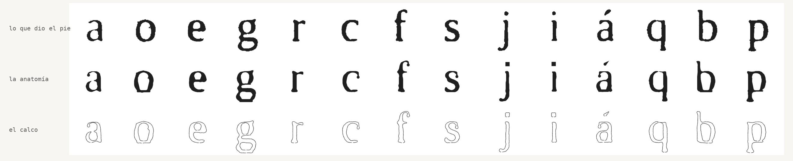

Cada parte de la letra responde a una decisión de la obra. Tres obedecen a la gravedad: el desagüe, la lluvia y las gotas.
Al acomodarse a la retícula, el fondo pasó de 1,71 a 1,5 teselas, y la altura de x, de 2,48 a 2,5. La pauta provisional ya proponía esas medidas.
En los 55 signos se abrieron 111 desagües. Cuelgan cinco gotas: s, a, c, f y á.
